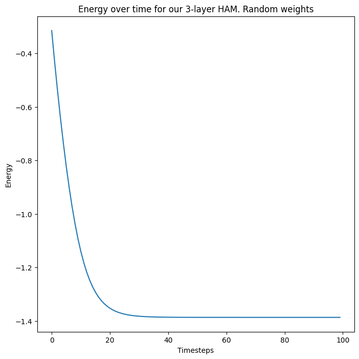
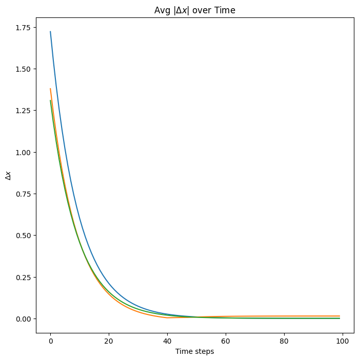
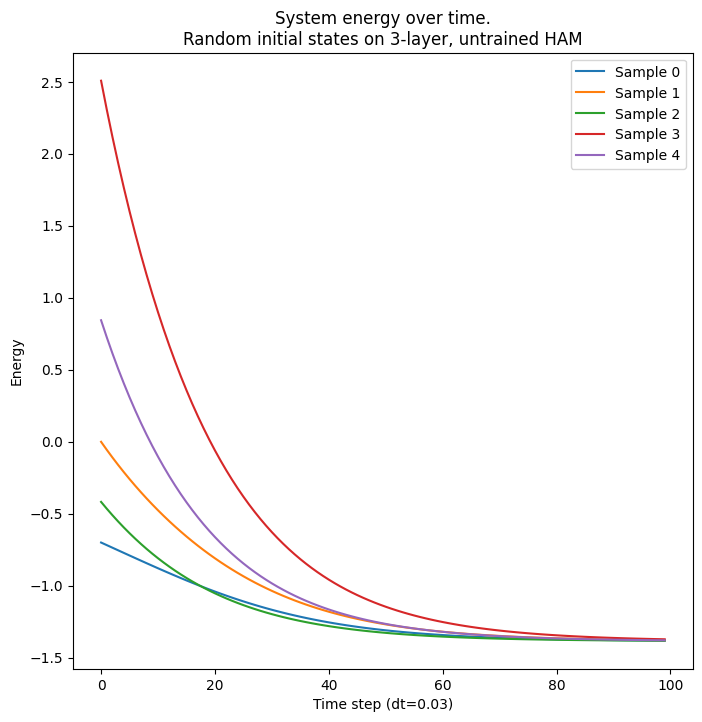
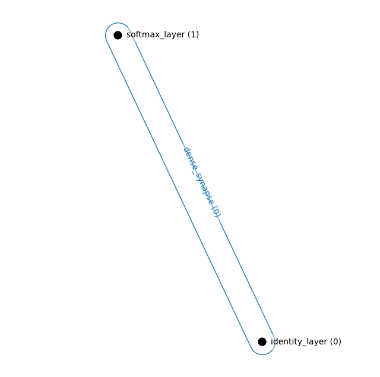
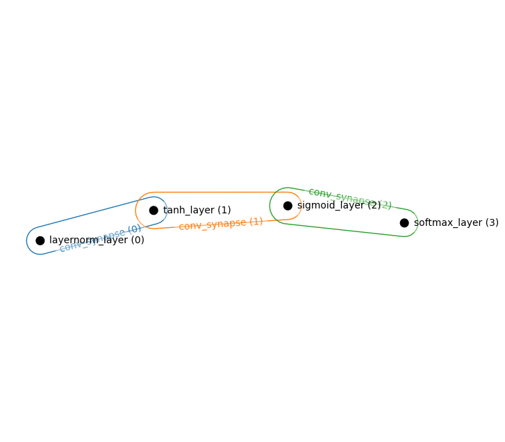
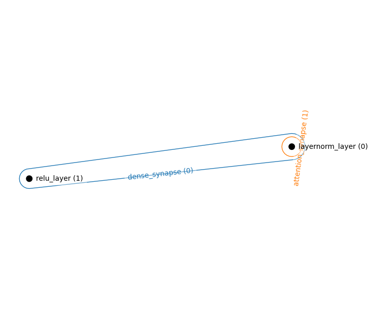
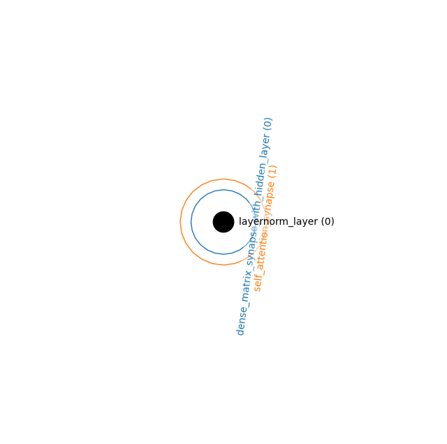
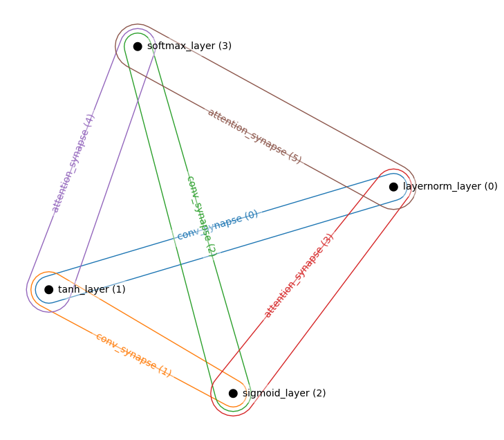
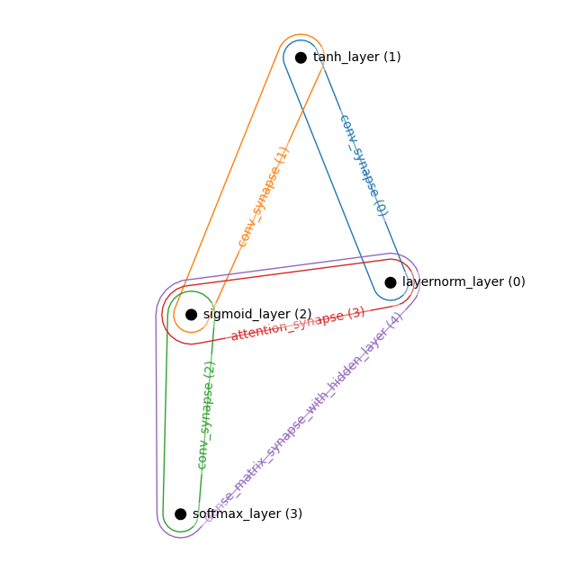

HAM
Assembling layers and synapses into a single system governed by an energy function
We have now provided the two primary components: layers and synapses. This module assembles those together into a single network that is governed by an energy function
HAM Basics
We connect layers and synapses in a hypergraph to describe the energy function. A hypergraph is a generalization of the familiar graph in that edges (synapses) can connect multiple nodes (layers). This graph – complete with the operations of the synapses and the activation behavior of the layers – fully defines the energy function for a given collection of neuron states.
HAM
HAM (layers, synapses, connections)
A Tree class with all Mixin Extensions. Base class for all Treex classes.
HAM.activations
HAM.activations (xs:jax.Array)
Turn a collection of states into a collection of activations
| Type | Details | |
|---|---|---|
| xs | Array | Collection of states for each layer |
HAM.energy
HAM.energy (xs:jax.Array)
The complete energy of the HAM
| Type | Details | |
|---|---|---|
| xs | Array | Collection of states for each layer |
HAM.synapse_energy
HAM.synapse_energy (gs:jax.Array)
The total contribution of the synapses’ contribution to the energy of the HAM.
A function of the activations gs rather than the states xs
| Type | Details | |
|---|---|---|
| gs | Array | Collection of activations of each layer |
HAM.layer_energy
HAM.layer_energy (xs:jax.Array)
The total contribution of the layers’ contribution to the energy of the HAM
| Type | Details | |
|---|---|---|
| xs | Array | Collection of states for each layer |
As is typical for JAX frameworks, the parameters of HAMs need to be initialized. Unlike other machine learning libraries, the states of each layer – that is, the dynamical variables of our system – also need to be initialized. The notation \(\mathbf{x}\) indicates the collection of all states from each layer, and \(x^\alpha\) indicates that we are referring to the state of layer at index \(\alpha\) in our collection.
We provide this functionality with the following helper functions:
HAM.init_states_and_params
HAM.init_states_and_params (param_key, bs=None, state_key=None)
Initialize the states and parameters of every layer and synapse in the network
| Type | Default | Details | |
|---|---|---|---|
| param_key | RNG seed for random initialization of the parameters | ||
| bs | NoneType | None | Batch size of the states to initialize, if needed |
| state_key | NoneType | None | RNG seed for random initialization of the states, if non-zero initializations are desired |
HAM.init_states
HAM.init_states (bs=None, rng=None)
Initialize the states of every layer in the network
| Type | Default | Details | |
|---|---|---|---|
| bs | NoneType | None | Batch size of the states to initialize, if needed |
| rng | NoneType | None | RNG seed for random initialization of the states, if non-zero initializations are desired |
We build and test the following small 3 layer HAM network throughout this notebook
from hamux.layers import *
from hamux.synapses import *layers = [
TanhLayer((2,)),
ReluLayer((3,)),
SoftmaxLayer((4,)),
]
synapses = [
DenseSynapse(),
DenseSynapse(),
]
connections = [
([0,1], 0),
([1,2],1),
]
ham = HAM(layers, synapses, connections)
# Initialize states and parameters from specified layer shapes
xs, ham = ham.init_states_and_params(jax.random.PRNGKey(0), state_key=jax.random.PRNGKey(1));2022-12-02 01:13:47.509827: E external/org_tensorflow/tensorflow/compiler/xla/stream_executor/cuda/cuda_driver.cc:267] failed call to cuInit: CUDA_ERROR_NO_DEVICE: no CUDA-capable device is detected
WARNING:absl:No GPU/TPU found, falling back to CPU. (Set TF_CPP_MIN_LOG_LEVEL=0 and rerun for more info.)print("NLayers: ", ham.n_layers)
print("NSynapses: ", ham.n_synapses)
print("NConnections: ", ham.n_connections)
print("Taus of each layer: ", ham.layer_taus)NLayers: 3
NSynapses: 2
NConnections: 2
Taus of each layer: [1.0, 1.0, 1.0]The energy of a HAM is fully defined by the individual energies of its layers and synapses.
\[E_\text{HAM} = E_\text{Layers} + E_\text{Synapses}\]
Code
print("\n".join([f"x{i}: {x.shape}" for i,x in enumerate(xs)])) # The dynamic variables
print("\n".join([f"W{i}: {S.W.shape}" for i,S in enumerate(ham.synapses)])) # The dynamic variablesx0: (2,)
x1: (3,)
x2: (4,)
W0: (2, 3)
W1: (3, 4)E_L = ham.layer_energy(xs); E_LDeviceArray(0.071, dtype=float32)gs = ham.activations(xs)
E_S = ham.synapse_energy(gs); E_SDeviceArray(-0.033, dtype=float32)test_eq(ham.energy(xs), E_L+E_S)The update rule for each of the layer states is simply defined as follows:
\[\tau \frac{dx^\alpha}{dt} = -\frac{dE_\text{system}}{dg^\alpha}\]
JAX is wonderful. Autograd does this accurately and efficiently for us.
HAM.updates
HAM.updates (xs:jax.Array)
The negative of our dEdg, computing the update direction each layer should descend
| Type | Details | |
|---|---|---|
| xs | Array | Collection of states for each layer |
HAM.dEdg
HAM.dEdg (xs:jax.Array)
Calculate the gradient of system energy wrt. the activations
Notice that we use an important mathematical property of the Legendre transform to take a mathematical shortcut, where dE_layer / dg = x
Let’s observe the energy descent in practice
@jax.jit
def step(ham, xs, dt):
energy = ham.energy(xs)
updates = ham.updates(xs)
alphas = [dt / tau for tau in ham.layer_taus]
next_states = jtu.tree_map(lambda x, u, alpha: x + alpha*u, xs, updates, alphas)
return energy, next_states
energies = []
allx = []
x = ham.init_states(rng=jax.random.PRNGKey(5))
for i in range(100):
energy, x = step(ham, x, 0.1)
energies.append(energy)
allx.append(x)Code
fig, ax = plt.subplots(1)
# ax = axs[0]
ax.plot(np.stack(energies))
ax.set_ylabel("Energy")
ax.set_xlabel("Timesteps")
ax.set_title("Energy over time for our 3-layer HAM. Random weights")
plt.show(fig)
x0diffs = jnp.abs(jnp.diff(jnp.stack([x[0] for x in allx]))).mean(-1)
x1diffs = jnp.abs(jnp.diff(jnp.stack([x[1] for x in allx]))).mean(-1)
x2diffs = jnp.abs(jnp.diff(jnp.stack([x[2] for x in allx]))).mean(-1)
# ax = axs[1]
fig2, ax = plt.subplots(1)
ax.plot(np.stack([x0diffs, x1diffs, x2diffs], axis=-1))
ax.set_title("Avg $|\Delta x|$ over Time")
ax.set_xlabel("Time steps")
ax.set_ylabel("$\Delta x$")
plt.show(fig)
plt.show(fig2)

So our 3-layer HAM system with randomly initialized weights and states converges to a fixed energy, at which point the states of each layer do not further change.
We implement the above, simple step function into the class, though more advanced optimizations from the JAX ecosystem (e.g., optax) can easily be used.
HAM.step
HAM.step (xs:List[jax.Array], updates:List[jax.Array], dt:float=0.1, masks:Optional[List[jax.Array]]=None)
A discrete step down the energy using step size dt scaled by the tau of each layer
| Type | Default | Details | |
|---|---|---|---|
| xs | typing.List[jax.Array] | Collection of current states for each layer | |
| updates | typing.List[jax.Array] | Collection of update directions for each state | |
| dt | float | 0.1 | Stepsize to take in direction of updates |
| masks | typing.Optional[typing.List[jax.Array]] | None | Boolean mask, 0 if clamped neuron, and 1 elsewhere. A pytree identical to xs. Optional. |
It is particularly useful if all of these functions can be applied to a batched collection of states, something JAX makes particularly easy through its jax.vmap functionality. We prefix vectorized versions of the above methods with a v.
HAM.vupdates
HAM.vupdates (xs:List[jax.Array])
A vectorized version of updates
| Type | Details | |
|---|---|---|
| xs | typing.List[jax.Array] | Collection of states for each layer |
HAM.vdEdg
HAM.vdEdg (xs:List[jax.Array])
A vectorized version of dEdg
| Type | Details | |
|---|---|---|
| xs | typing.List[jax.Array] | Collection of states for each layer |
HAM.venergy
HAM.venergy (xs:List[jax.Array])
A vectorized version of energy
| Type | Details | |
|---|---|---|
| xs | typing.List[jax.Array] | Collection of states for each layer |
HAM.vactivations
HAM.vactivations (xs:List[jax.Array])
A vectorized version of activations
| Type | Details | |
|---|---|---|
| xs | typing.List[jax.Array] | Collection of states for each layer |
batch_size=5
vxs = ham.init_states(bs=batch_size, rng=jax.random.PRNGKey(2))Code
print("\n".join([f"x{i}: {x.shape}" for i,x in enumerate(xs)])) # The dynamic variablesx0: (2,)
x1: (3,)
x2: (4,)We repeat the above energy analysis for batched samples. For an untrained network, all samples achieve the same energy
@jax.jit
def step(ham, xs, dt):
energy = ham.venergy(xs)
updates = ham.vupdates(xs)
alphas = [dt / tau for tau in ham.layer_taus]
next_states = jtu.tree_map(lambda x, u, alpha: x + alpha*u, xs, updates, alphas)
return energy, next_states
energies = []; allx = []; dt = 0.03; x = vxs
for i in range(100):
energy, x = step(ham, x, dt)
energies.append(energy)
allx.append(x)
senergies = jnp.stack(energies)Code
fig,ax = plt.subplots(1)
ax.plot(senergies)
ax.set_xlabel(f"Time step (dt={dt})")
ax.set_ylabel(f"Energy")
ax.set_title(f"System energy over time.\nRandom initial states on 3-layer, untrained HAM")
ax.legend([f"Sample {i}" for i in range(senergies.shape[-1])])
plt.show(fig)
We create several helper functions to save and load our state dict.
HAM.load_ckpt
HAM.load_ckpt (ckpt_f:Union[str,pathlib.Path])
Load from file name
| Type | Details | |
|---|---|---|
| ckpt_f | typing.Union[str, pathlib.Path] | Filename of checkpoint to load |
HAM.save_state_dict
HAM.save_state_dict (fname:Union[str,pathlib.Path], overwrite:bool=True)
Save the state dictionary for a HAM
| Type | Default | Details | |
|---|---|---|---|
| fname | typing.Union[str, pathlib.Path] | Filename of checkpoint to save | |
| overwrite | bool | True | Overwrite an existing file of the same name? |
HAM.to_state_dict
HAM.to_state_dict ()
Convert HAM to state dictionary of parameters and connections
HAM.load_state_dict
HAM.load_state_dict (state_dict:Any)
Load the state dictionary for a HAM
| Type | Details | |
|---|---|---|
| state_dict | typing.Any | The dictionary of all parameters, saved by save_state_dict |
Visualizing a HAM
We employ the hypernetx package to create a simple visualization of the layers and nodes
@patch
def visualize(self:HAM):
"""Return a simple hypergraph object of the connections."""
nodenames = [l.name for l in self.layers]
edgenames = [s.name for s in self.synapses]
graph = {f"{edgenames[syn_idx]} ({syn_idx})": [f"{nodenames[i]} ({i})" for i in layer_idxs] for layer_idxs, syn_idx in self.connections}
H = hnetx.Hypergraph(graph, name=self.name)
return HExample Model Architectures
We can use our primitive visualization function to see the connections of our model. We showcase these only to express what is possible to build using our architectures. Hierarchical models have not yet been tested
Simple Hopfield Network
Consisting of one visible layer and one hidden layer
layers = [
IdentityLayer((768,)), # Visible Layer
SoftmaxLayer((1000,)), # Hidden Layer
]
synapses = [
DenseSynapse()
]
connections = [
((0,1),0)
]
ham = HAM(layers, synapses, connections)
_, ham = ham.init_states_and_params(jax.random.PRNGKey(0))
hnetx.draw(ham.visualize())
Simple Convolutional Layer
layers = [
LayerNormLayer((32,32,3)), # Visible Layer
TanhLayer((16,16,128,)),
SigmoidLayer((8,8,256)),
SoftmaxLayer((4,4,256)),
]
synapses = [
ConvSynapse((2,2), strides=(2,2)),
ConvSynapse((2,2), strides=(2,2)),
ConvSynapse((2,2), strides=(2,2)),
]
connections = [
((0,1),0),
((1,2),1),
((2,3),2)
]
ham = HAM(layers, synapses, connections)
_, ham = ham.init_states_and_params(jax.random.PRNGKey(0))
hnetx.draw(ham.visualize())
Energy Transformer (explicit Hopfield Module)
layers = [
LayerNormLayer((768,)), # Visible Layer
ReluLayer((3072,)), # Hidden layer of CHN
]
synapses = [
DenseSynapse(),
AttentionSynapse(num_heads=3, zspace_dim=224)
]
connections = [
((0,1), 0),
((0,0), 1),
]
ham = HAM(layers, synapses, connections)
_, ham = ham.init_states_and_params(jax.random.PRNGKey(0))
hnetx.draw(ham.visualize())
Energy Transformer (implicit Hopfield Module)
layers = [
LayerNormLayer((768,)), # Visible Layer
]
synapses = [
DenseMatrixSynapseWithHiddenLayer(nhid=3072),
SelfAttentionSynapse(num_heads=3, zspace_dim=224)
]
connections = [
((0,), 0),
((0,), 1),
]
ham = HAM(layers, synapses, connections)
_, ham = ham.init_states_and_params(jax.random.PRNGKey(0))
hnetx.draw(ham.visualize())
Attention and Convolutions
layers = [
LayerNormLayer((32,32,3)), # Visible Layer
TanhLayer((16,16,128,)),
SigmoidLayer((8,8,256)),
SoftmaxLayer((4,4,256)),
]
synapses = [
ConvSynapse((2,2), strides=(2,2)),
ConvSynapse((2,2), strides=(2,2)),
ConvSynapse((2,2), strides=(2,2)),
AttentionSynapse(num_heads=3, zspace_dim=64),
AttentionSynapse(num_heads=3, zspace_dim=64),
AttentionSynapse(num_heads=3, zspace_dim=64),
]
connections = [
((0,1),0),
((1,2),1),
((2,3),2),
((0,2),3),
((1,3),4),
((0,3),5),
]
ham = HAM(layers, synapses, connections)
_, ham = ham.init_states_and_params(jax.random.PRNGKey(0))
hnetx.draw(ham.visualize())
N-ary synapses
layers = [
LayerNormLayer((32,32,3)), # Visible Layer
TanhLayer((16,16,128,)),
SigmoidLayer((8,8,256)),
SoftmaxLayer((4,4,256)),
]
synapses = [
ConvSynapse((2,2), strides=(2,2)),
ConvSynapse((2,2), strides=(2,2)),
ConvSynapse((2,2), strides=(2,2)),
AttentionSynapse(num_heads=3, zspace_dim=64),
DenseMatrixSynapseWithHiddenLayer(200)
]
connections = [
((0,1),0),
((1,2),1),
((2,3),2),
((0,2),3),
((0,2,3),4)
]
ham = HAM(layers, synapses, connections)
_, ham = ham.init_states_and_params(jax.random.PRNGKey(0))
hnetx.draw(ham.visualize())